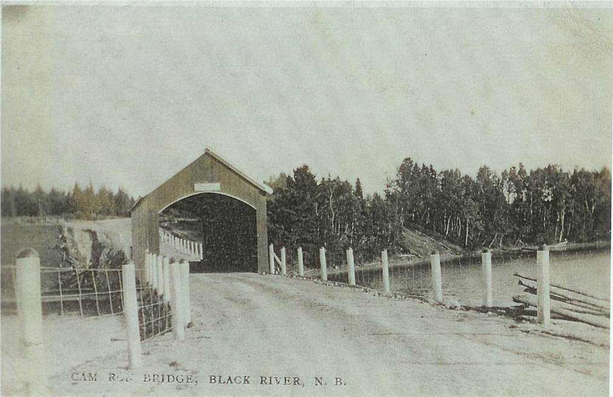

Cameron Bridge

An undated photo of the Cameron Bridge looking south provided by Francis J. MacNaughton
The Cameron Bridge provided a crossing for the main road at Middle Black River; the bridge and the adjacent school are so named because of the preponderance of settlers named Cameron in the immediate area. Like other covered bridges, each winter a nearby resident was designated to snow the bridge to ease the travel of sleds.
The bridge, the shortest of the three spanning the Black River, was badly damaged by fire in 1970. Following the fire, a Bailey bridge provided temporary crossing. A new pre-cast concrete bridge was constructed in 1976.
This was also considered a great trout fishing location.